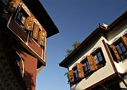

Plovdiv Old Town
Plovdiv is one of the most appealing cities in the Balkans. It has largely avoided the disasters that have afflicted so many of its counterparts, and as a result possesses a clearer sense of historical continuity. Despite its classical monuments and nineteenth century architecture, it is not in any way a museum town - the lively streets of the modern city are also part of the attraction.
The most obvious attraction is the hilly Old Town, a maze of timber-framed mansions, colourful facades, oriel windows, elaborate decoration, and cobbled alleys. One of the most impressive houses now houses an Ethnographic Museum. At the south end of the hill are the top-heavy Lamartine House and the Roman Theatre, which still hosts performances in summer.
West of the Old Town a long pedestrianised street runs from the central square to the River Maritsa, past a number of monuments including mosques and the ruins of a Roman stadium. This is the heart of modern Plovdiv, especially in the evening when everyone in the city seems to stroll up and down the street. The river itself seems strangely neglected. A little futher west is Sahat Tepe, a hill with a clock tower that affords are great views over both the modern centre and the Old Town - especially nice at sunset.
The grid of streets between the centre and the train station doesn't get much attention in guidebooks, but I think it's a nice place for a stroll. In contrast to the Bulgarian National Revival architecture of the Old Town, the buildings here have a more Central European feel. It doesn't look like much restoration has been carried out here, and the peeling plasterwork and cobbled streets have a kind of melancholy charm.
The town of Asenovgrad is a short distance south of Plovdiv, at the point where the Plain of Thrace gives way quite suddenly to the Rhodope Mountains. The town itself is pleasant enough, and the main street seems livelier than many provincial Bulgarian towns. But the main reason to come here is to explore the entrance to the Chepelarska Gorge, easily reached by walking south from the town. The Church of Sveta Bogoroditsa is high on a crag on the western side of the gorge, with the ruins of a fortress ('Krepost') just above it. There are a variety of other shrines and chapels on the hillside. The eastern side of the valley has no specific sites to aim for, but trails leading uphill provide views of Sveta Bogoroditsa and into the valley. Although the city of Plovdiv is clearly visible to the north, the trails here offer a genuine taste of more rural parts of the Rhodope - there are butterflies and wild flowers everywhere.
Further south along the Chepalarske is Bachkovo Monastery, probably the best-known monastery in Bulgaria after Rila. The monastery buildings blend wonderfully with their surroundings, an impression enhanced by the grass growing between the tiles of the roof. As you would expect there is no shortage of frescos - look out for some particularly bloodthirsty ones in the porch of the church. If you have time and a map there are a number of hiking trails in the area.
Plovdiv's train station is ten minutes' walk south-west of the central square. Connections are excellent to Sofia, good to Burgas and Varna, and not so good to Veliko Tarnovo - a bus may be more convenient for the latter. The main (Yug) bus station is conveniently opposite the train station. Some northbound buses leave from a station north of the Maritsa river, and buses to the Rhodope Mountains leave from the Rhodope station, just south of the railway (look for the large Billa supermarket).
There are trains to Asenovgrad roughly every hour (30 minutes). Reasonably frequent buses to Smolyan stop at Bachkovo (less than one hour).
Plovdiv is famous for its International Trade Fairs. If you plan on being there in May or September you should check the exact dates of the fairs, as accommodation will be scarce and more expensive.
More photos of Plovdiv and Bachkovo in my Bulgaria Galleries